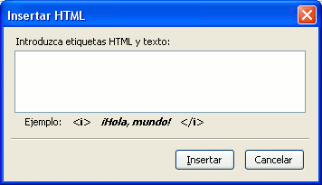

Insertar
sonidos en N|VU
N|VU no dispone de ningún icono que nos
facilite la introducción directa de fragmentos sonoros.
Sin embargo, podemos aprovechar una característica
del navegador para hacerlo, ya que los archivos con
extensión wav
o mid
son reconocidos y manejados directamente
por el mismo.
Crea un nuevo documento con
N|VU.
- Introduce en el nuevo documento la imagenque ya
tenías guardada.
- Pulsa sobre la imagen y crea un vínculo que nos
lleve al archivo primavera.mid
- Guarda el archivo como actividad39.html y
pasa al navegador para ver lo que ocurre.
- Vuelve a N|VU y escribe un texto para enlazarlo
con el
saludo que grabaste antes. Si no tienes un saludo grabado puedes
utilizar alguno de los sonidos que aparecen en la carpeta
Windows\Media. Selecciona ctmelody.wav o ding.wav y cópialos
en la carpeta en la que estás almacenando tus
páginas.
- Crea el enlace al archivo de sonido y guarda la
página.
- Pasa al navegador para comprobar que todo funciona
correctamente.
Hasta
aquí las cosas han resultado bastante sencillas. Hemos
incluido en nuestra página unos sonidos y hemos dejado en
manos del visitante la opción para que los active si lo
desea. El problema lo vamos a tener cuando pretendamos que nuestra
página cargue automáticamente un sonido. No nos
queda más remedio que hacerlo tecleando el código
necesario. Podríamos hacerlo cambiando a la
pestaña  o bien
utilizando la opción del menú que nos
presentará la ventana de la ilustración.
o bien
utilizando la opción del menú que nos
presentará la ventana de la ilustración.
Además,
para complicar un poquito las cosas, las etiquetas de sonido no son
comunes para ambos navegadores, por lo que deberíamos
incluirlas repetidas para que se pudieran escuchar los sonidos
independientemente del navegador con el que se visite la
página.
Lo primero que haremos será
ver las etiquetas básicas.
Para la mayoría de los navegadores <embed
src="nombre de archivo">
Para versiones antiguas de Explorer <bgsound
src="nombre de archivo">
 Empecemos
con la lista de particularidades que provoca la falta de compatibilidad
entre los principales navegadores:
Empecemos
con la lista de particularidades que provoca la falta de compatibilidad
entre los principales navegadores:
- La etiqueta
embed es
reconocida por la mayoría
de navegadores en las últimas versiones.
- Para garantizar la compatibilidad con las versiones
previas de Explorer es imprescindible que figure la etiqueta
bgsound
- Si la versión de Explorer es la 5 o superior
tiene preferencia la etiqueta
embed
sobre bgsound, por lo que los
modificadores de ésta no tendrán efecto.
- Mientras que con la etiqueta
bgsound
Explorer arranca
automáticamente sin mostrar ningún indicador
gráfico sí que lo hace cuando se utiliza embed
al
igual que en Mozilla.
- Si queremos que el sonido arranque
automáticamente hay que añadir en la etiqueta
embed
un atributo de forma que quede <embed
src="nombre de archivo" hidden="true">
- La representación gráfica de la
consola para controlar los sonidos depende de los plug-ins que tenga
instalados cada sistema, por lo que comprobarás que la
imagen se verá distorsionada en uno de ellos cuando
especifiques las dimensiones de la consola.
- La consola tiene un comportamiento irregular cuando se
carga en Explorer utilizando la etiqueta
embed:
el botón de
parada hace un salto hacia adelante, y para parar la
reproducción hay que pulsar el botón de pausa.
- Cuando se hace una vista preliminar de la página
con Mozilla es probable que no se oiga el sonido (depende de las
configruaciones de cada ordenador). Se debe a que Mozilla necesita que
el servidor le indique el tipo de archivo que se usa para poder
manejarlo, mientras que Explorer utiliza la base de datos del propio
Windows. Si te encuentras con ese problema cuando intentes ver la
página en tu ordenador no le des muchas vueltas: comprueba
que las etiquetas están escritas correctamente y que se
reproduce el sonido cuando se ve la página en Explorer;
cuando publiques la página en Internet todo se
solucionará de forma aparentemente "mágica".
En fin, como se puede comprobar, un considerable galimatías
que sufren quienes tienen que crear las páginas.

- Crea un nuevo documento con el editor y déjalo
completamente en blanco.
- Utiliza el menú
para escribir
la siguiente etiqueta
<embed src="primavera.mid"
hidden="true">
- Guarda el archivo como actividad40.html
y comprueba lo que ocurre al verlo en el navegador.
- Vuelve al editor y modifica la etiqueta cambiando
embed
por bgsound.
- Guarda los cambios y comprueba lo que ocurre en el navegador
- Vuelve al editor y escribe la referencia utilizando ambas
etiquetas
embed y bgsound
- Modifica la etiqueta común para que quede
<embed
src="primavera.mid" width="145"
height="60">.
Guarda y comprueba en el navegador.
- Si trabajas en Windows y tu navegador por defecto es
Internet Explorer es importante que compruebes la apariencia de las
páginas en otros navegadores, por lo que te recuerdo la
importancia de que tengas instalado, al menos, Mozilla Firefox. En
casos como nos ocupa podrás comprobar que pueden aparecer
diferencias en la
apariencia de la consola de control y el comportamiento de los botones.
La primera
configuración de la etiqueta era muy poco respetuosa con el
visitante, ya que iniciaba la carga de la melodía sin darle
ni siquiera opción para detenerla.
Con la última configuración de la etiqueta la
situación varía ya que damos la oportunidad de
que sea el visitante el que elija (Al menos en Mozilla, ya que en
algunas versiones de Explorer no se respeta).
Si quisiera que la melodía se iniciara
automáticamente pero presentando la consola para poder
pararla tendría que escribir la etiqueta autostart="true"
En la siguiente sección veremos cómo
podemos incorporar fragmentos sonoros, e incluso de vídeo,
de un tamaño manejable para su transmisión por
Internet.